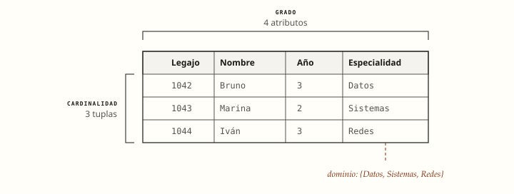

Lección 04 · Unidad 1 · Sistemas de Gestión de Base de Datos
La estructura relacional: relación, tupla, atributo, dominio
Cuatro palabras y una advertencia: una relación no es una tabla, y "cardinalidad" acá significa otra cosa que en el DER.
01El vocabulario, sobre un ejemplo

INSERT.
| Término | Qué es | Alias que vas a escuchar |
|---|---|---|
| Relación | El conjunto de datos entero. Se dibuja como tabla. | tabla |
| Tupla | Una fila: un hecho completo del minimundo. | fila, registro |
| Atributo | Una columna: una propiedad, con su interpretación. | columna, campo |
| Dominio | El conjunto de valores permitidos para un atributo. | tipo de dato (impreciso) |
| Grado | Cuántos atributos tiene la relación. | aridad |
| Cardinalidad | Cuántas tuplas tiene la relación. | — |
El dominio es el que más se subestima. No es sólo "texto" o "entero":
es la restricción semántica. El dominio de Año no es entero, es
entero entre 1 y 5. Todo lo que no declares como dominio, después lo vas a tener
que defender con código.
"Cardinalidad" significa dos cosas distintas en esta materia.
- Acá, en el modelo relacional: el número de tuplas de una relación. Es el tamaño de un conjunto.
- En el DER: la razón de cardinalidad — ese
1o esaNsobre la línea de una relación (lección 10).
Si en un parcial te preguntan "la cardinalidad de esta relación", mirá si te dieron una tabla con datos (contá filas) o un diagrama (razón de cardinalidad). No hay forma de saberlo por la palabra sola.
02Por qué una relación no es una tabla
Elmasri lo dice sin rodeos: la definición formal de relación implica ciertas
características que la hace diferente de un fichero o una tabla
. La tabla es el
dibujo; la relación es el objeto matemático. Y el objeto matemático es un
conjunto.
De ahí salen dos consecuencias que se preguntan:
-
Las tuplas no tienen orden.
Matemáticamente, los elementos de un conjunto no guardan un orden entre ellos; por tanto, las tuplas en una relación tampoco la tienen.
La misma relación mostrada en dos órdenes distintos es la misma relación. Por eso, si querés un orden en SQL, tenés que pedirlo conORDER BY: sin esa cláusula, el motor no te debe nada. - No hay tuplas repetidas. Un conjunto no admite elementos duplicados. Esto es lo que garantiza que siempre exista alguna forma de identificar una fila — y es la base de la clave, que es la lección que sigue.
Una tabla real de SQL sí puede tener filas duplicadas si no le declaraste una
clave primaria, y SELECT devuelve duplicados salvo que pidas
DISTINCT. O sea: SQL trabaja con multiconjuntos, no con conjuntos
estrictos. La teoría dice conjunto; el motor te deja romperla. Declarar la clave
primaria es lo que hace que tu tabla se porte como una relación de verdad.
03Esquema y estado: la distinción que ordena todo
Hay dos cosas que se llaman parecido y conviene separar de una vez, porque vuelve en cada unidad:
| Esquema de relación | Estado de relación | |
|---|---|---|
| Qué es | La descripción: el nombre y sus atributos con sus dominios. | El contenido en un momento dado: las tuplas que hay ahora. |
| Ejemplo | ESTUDIANTE(Legajo, Nombre, Año, Especialidad) |
Las tres filas del dibujo de arriba. |
| Cambia… | casi nunca, y con un ALTER TABLE. |
todo el tiempo, con cada INSERT o DELETE. |
Elmasri lo resume así: a medida que varía el estado del mundo real varía la relación,
sin embargo, el esquema R es relativamente estático
.
Cuando diseñás una base, diseñás esquemas. El estado se llena solo, con el uso.
04Práctica
La relación de arriba tiene 4 columnas y 3 filas. Insertás dos estudiantes más. ¿Qué cambió?
Corrés dos veces el mismo SELECT sin ORDER BY y las filas
salen en distinto orden. ¿El motor tiene un error?
Declarás Año como INTEGER, y alguien carga un estudiante
de año 47. ¿Qué falló?
Elmasri & Navathe, 5ª ed. — sección 5.1 "Conceptos del modelo relacional",
páginas 125 a 129 (páginas 151 a 155 del PDF en raw/).
Prestale atención a 5.1.2, "Características de las relaciones": es corta y es
exactamente el material de este apunte.
Soy tu profe acá. ¿Querés que revisemos juntos qué dominios habría que declarar en el TP1 de la farmacia? Es un ejercicio que rinde.